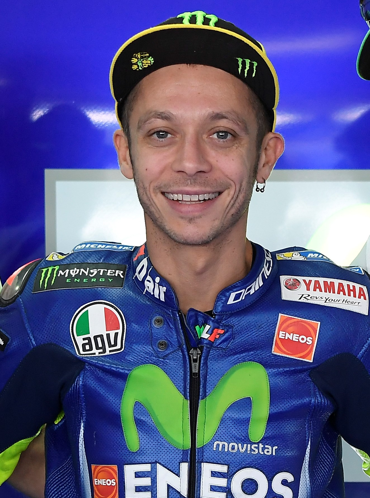
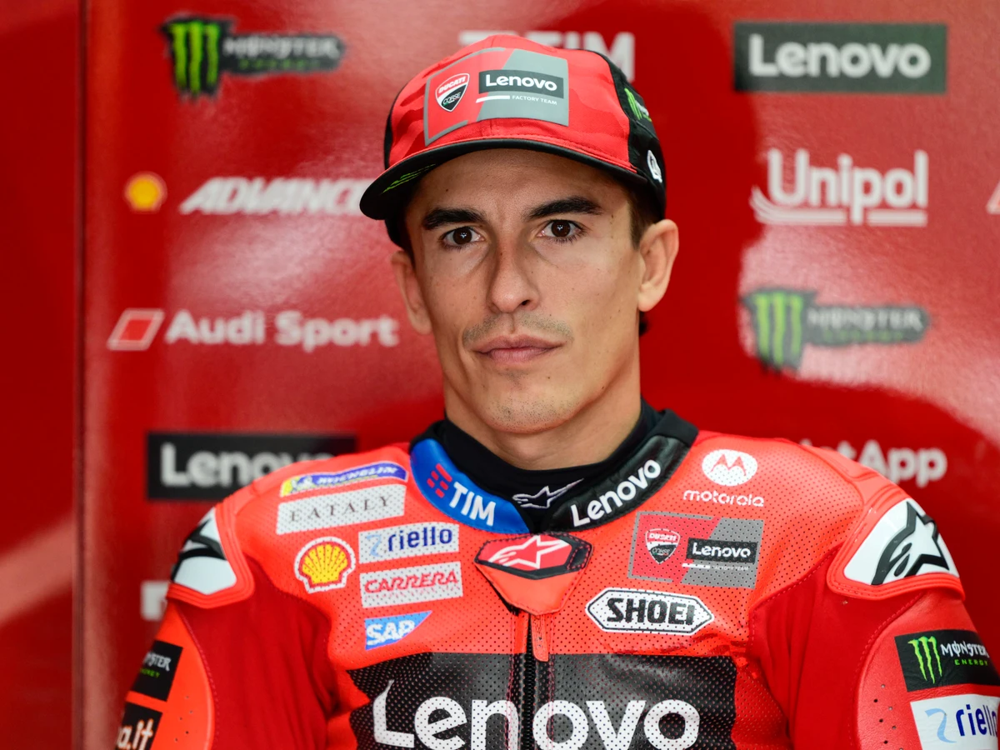
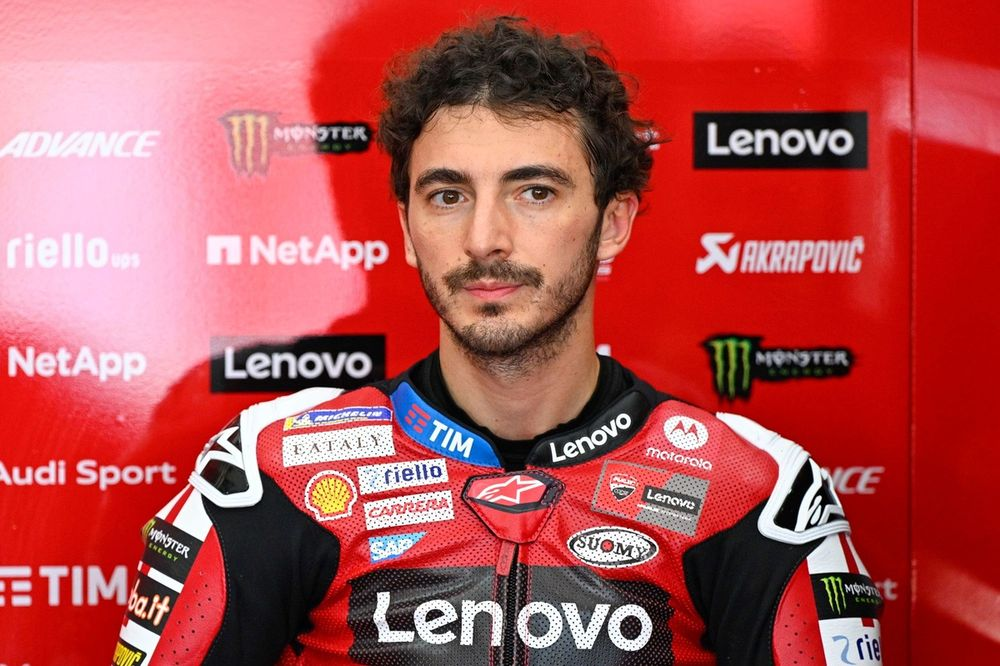
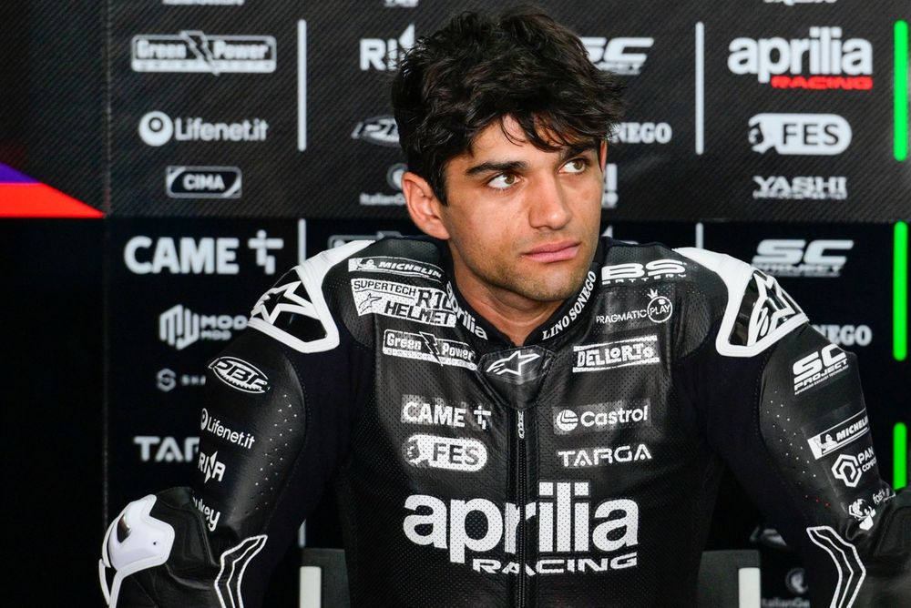
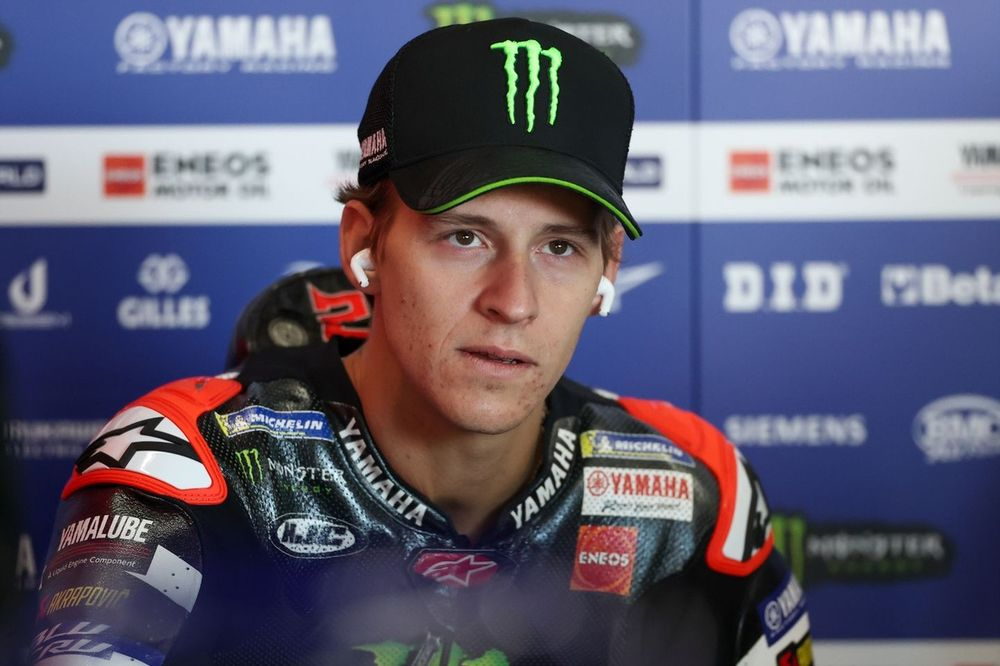
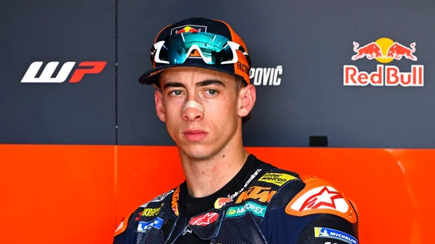

Valentino Rossi
9 veces campeón del mundo y una de las mayores leyendas del motociclismo.

Marc Márquez
7 veces campeón del mundo, reconocido por su estilo agresivo y por ser un referente en la era moderna.

Francesco Bagnaia
2 veces campeón del mundo y el máximo exponente de la escuderia roja Ducati.

Jorge Martín
1 vez campeón del mundo y reconocido por su capacidad para llevar la moto al límite absoluto.

Fabio Quartararo
1 vez campeón del mundo y el piloto que devolvió a Francia a lo más alto del motociclismo.

Pedro Acosta
0 veces campeón del mundo, una de las mayores promesas del MotoGP y futuro protagonista del campeonato.

Marco Bezzechi
0 veces campeón del mundo, especialista en condiciones de pista difíciles y la gran apuesta de Aprilia para el título mundial.